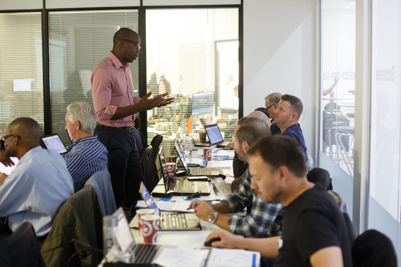
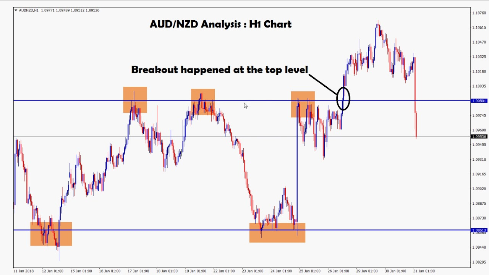

Financial Markets for everyone!
Take this opprotunity to learn by doing the art of trading the financial markets and become consistently profitable in the long run.
Services at Quantian Trading

Trading Lessons

Trading Signals
Account Management

Mentorship
"Don't ever make the mistake of believing that market success has to come to you fast. Trade small, stay in the game, persist, and eventually, you'll reach a satisfying level of proficiency."
-- Yvan ByeajeeStay updated with Quantian Trading News!
Sign up for the latest newsletter right now!